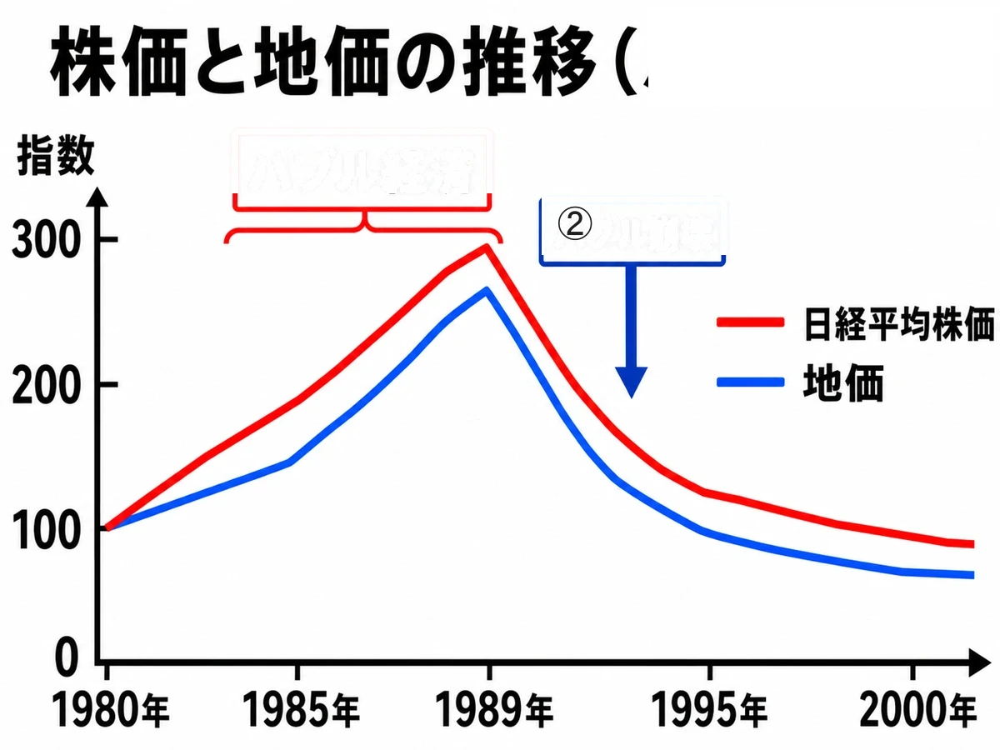

歴史 ⑲問題集
現代の世界
冷戦終結 〜 令和
いっしょに
がんばろう！
がんばろう！
年
年表でチェック
（ ）をタップすると答えが出るよ。まずは自分で言ってから確かめよう！
| 年代 | できごと |
|---|---|
| 1980年代後半 | 日本で株価や地価が異常に高騰するが起こる |
| 1989年 | が崩壊し、米ソ首脳がで冷戦の終結を宣言する |
| 1990年 | 東西に分かれていたドイツがされる |
| 1991年 | バブル経済が崩壊し、日本は長いに入る |
| 1991年 | が解体し、15の共和国に分かれる |
| 1991年 | イラクのクウェート侵攻をきっかけにが起こる |
| 1992年 | 自衛隊の海外派遣を可能にするが成立する |
| 1993年 | 55年体制が終わり、内閣が発足する |
| 1993年 | ヨーロッパの統合を進めるが発足する |
| 1995年 | 兵庫県南部でが起こる |
| 1995年 | オウム真理教によるが起こる |
| 1997年 | 温室効果ガス削減を定めたが採択される |
| 2001年 | アメリカでが起こる |
| 2003年 | アメリカがを起こしフセイン政権を倒す |
| 2011年 | 東北地方でが起こり、福島第一原発事故が発生する |
| 2015年 | 温暖化対策の新枠組みと、国連のが採択される |
1
冷戦の終結
▶やり方をえらぼう目次にもどれば何度でも変えられるよ
解答
順番
順番
A要点まとめ（ ）をタップして確かめよう
先に参考書で理解する
1989年、東西ドイツを分けていたが崩壊した。同じ年、ソ連の指導者とアメリカの首脳はを開き、長く続いた冷戦の終結を宣言した。1990年には東西のが統一され、1991年にはが解体して15の共和国に分かれた。同じ年、イラクのクウェート侵攻をきっかけにが起こった。1993年にはヨーロッパの統合を進めるが発足し、のちに共通通貨も導入された。2001年にはアメリカでが起こり、その後の戦争を経て2003年のでは独裁政権が倒された。
▶ここからは一問一答答え合わせのやり方をえらぼう
B一問一答1 / 14
1989年のマルタ会談で、アメリカとソ連の首脳が終結を宣言した対立は？
解説を読む（ヒント）
冷戦
1989年のマルタ会談で、アメリカとソ連の首脳が、長く続いた冷戦を終わらせると宣言しました。
B一問一答3 / 14
1989年11月、東西ドイツを隔てる壁が壊された出来事は？
解説を読む（ヒント）
ベルリンの壁崩壊
1989年11月、東西ドイツを分けていたベルリンの壁が崩れ、翌1990年のドイツ統一につながりました。
B一問一答4 / 14
ソ連で改革を進め冷戦終結を主導した最後の指導者は？
解説を読む（ヒント）
ゴルバチョフ
ゴルバチョフはソ連最後の指導者です。国内改革を進め、1989年のマルタ会談で冷戦終結を宣言しました。
B一問一答5 / 14
ゴルバチョフが進めた政治・経済の改革は？
解説を読む（ヒント）
ペレストロイカ
ペレストロイカは、1980年代後半にゴルバチョフが進めたソ連の改革です。「建て直し」という意味です。
B一問一答6 / 14
1990年に、東西に分かれていたものが再統一された国は？
解説を読む（ヒント）
ドイツ
1990年、東ドイツと西ドイツが一つの国に戻りました。冷戦が終わる時代を表す大きな出来事です。
B一問一答7 / 14
1991年に解体し、15の共和国に分かれた国は？
解説を読む（ヒント）
ソ連
1991年、ソ連は解体してロシアなど15の共和国に分かれました。世界の国どうしの関係も大きく変わりました。
B一問一答9 / 14
1991年、イラクのクウェート侵攻を受けて多国籍軍がイラクを攻撃した戦争は？
解説を読む（ヒント）
湾岸戦争
湾岸戦争は、イラクがクウェートに攻めこんだことをきっかけに、1991年に起こった戦争です。
B一問一答10 / 14
1993年に発足したヨーロッパの統合機構は？
解説を読む（ヒント）
EU（ヨーロッパ連合）
EUは1993年に発足した、ヨーロッパの国々のまとまりです。経済や政治で協力を進めています。
B一問一答13 / 14
2001年9月11日に起きたテロ事件は？
解説を読む（ヒント）
アメリカ同時多発テロ
2001年9月11日にアメリカで起きた大きなテロ事件です。その後のアフガニスタン戦争などにつながりました。
B一問一答14 / 14
アメリカ同時多発テロが起きた日は？
解説を読む（ヒント）
2001年9月11日
2001年9月11日、ニューヨークのビルなどが旅客機で攻撃され、アメリカ同時多発テロが起きました。
D記述問題1 / 3 文章で説明しよう
1991年に湾岸戦争が起こったのはなぜか、説明しなさい。
指定語句 クウェート
解説を読む（ヒント）
1990年にイラクがクウェートに攻めこんだことをきっかけに、翌1991年に多国籍軍とイラクの間で戦争が起こったから。
D記述問題2 / 3 文章で説明しよう
2001年の同時多発テロの後、アメリカが大量破壊兵器の保有を理由に2003年に攻撃した国はどこか。その後の経過にふれて説明しなさい。
指定語句 イラク戦争大量破壊兵器
解説を読む（ヒント）
イラクで、アメリカは同時多発テロの後、大量破壊兵器を持っていることを理由に2003年にイラク戦争を起こし、フセインの独裁政権を倒した。
D記述問題3 / 3 文章で説明しよう
冷戦の終結はどのように宣言されたか、説明しなさい。
指定語句 ベルリンの壁マルタ会談
解説を読む（ヒント）
1989年にベルリンの壁が崩壊し、同じ年に米ソの首脳がマルタ会談を開いて冷戦の終結を宣言した。

2
平成の日本
▶やり方をえらぼう目次にもどれば何度でも変えられるよ
解答
順番
順番
A要点まとめ（ ）をタップして確かめよう
先に参考書で理解する
1980年代後半、日本では株価や地価が異常に高騰するが起こったが、1991年ごろに崩壊し、長い不況が続いた。1992年には自衛隊の海外派遣を可能にするが成立し、1993年にはを首相とする連立政権が誕生して55年体制が終わった。1995年1月には兵庫県南部でが起こり、同じ年3月にはオウム真理教によるが発生した。2011年3月11日には東北地方でが起こり、大津波によってが引き起こされた。近年の日本は、子どもの数が減ると高齢者の割合が増えるという課題に直面している。
▶ここからは一問一答答え合わせのやり方をえらぼう
B一問一答1 / 14
1980年代後半に、株価や地価が異常に高騰した経済現象は？
解説を読む（ヒント）
バブル経済
バブル経済は、1980年代後半に株価や土地の値段が大きく上がった状態です。1991年ごろに崩れ、不景気が続きました。
B一問一答2 / 14
1991年に株価・地価が下落し、日本経済が長期不況に陥った出来事は？
解説を読む（ヒント）
バブル崩壊
1991年ごろ、株価や土地の値段が大きく下がり、日本は長い不景気に入りました。これをバブル崩壊といいます。
B一問一答5 / 14
1993年に55年体制を終わらせた首相は？
解説を読む（ヒント）
細川護熙
細川護熙は日本新党を率いた政治家です。1993年に首相となり、自民党だけの長い政権を終わらせました。
B一問一答6 / 14
1995年1月17日に発生した兵庫県南部の大地震は？
解説を読む（ヒント）
阪神・淡路大震災
阪神・淡路大震災は、1995年1月17日に起きた大地震です。神戸などで大きな被害が出ました。
B一問一答7 / 14
阪神・淡路大震災・地下鉄サリン事件の年は？
解説を読む（ヒント）
1995年
1995年は、阪神・淡路大震災と地下鉄サリン事件が起きた年です。日本社会に大きな不安を与えました。
B一問一答8 / 14
1995年3月にオウム真理教が東京の地下鉄で起こしたテロ事件は？
解説を読む（ヒント）
地下鉄サリン事件
地下鉄サリン事件は、1995年3月に東京の地下鉄で起きたテロ事件です。多くの人が被害を受けました。
B一問一答9 / 14
1992年に成立し、自衛隊の海外派遣を可能にした法律は？
解説を読む（ヒント）
PKO協力法
PKO協力法は、1992年にできた法律です。自衛隊が国連の平和維持活動に参加できるようになりました。
B一問一答11 / 14
2011年3月11日に発生した東北地方太平洋沖の大地震は？
解説を読む（ヒント）
東日本大震災
東日本大震災は、2011年3月11日に起きた大地震です。大津波と福島第一原発事故も起こりました。
D記述問題1 / 3 文章で説明しよう
東日本大震災で福島第一原発事故が起きたしくみを説明しなさい。
指定語句 津波メルトダウン
解説を読む（ヒント）
津波によって原発の電源が止まり、原子炉を冷やせなくなったため、燃料が高熱で溶け落ちるメルトダウンが起きたから。
D記述問題2 / 3 文章で説明しよう
1992年にPKO協力法が成立した目的を簡単に書きなさい。
指定語句 自衛隊平和維持活動
解説を読む（ヒント）
争いが起きた地域で停戦の見守りなどを行う国連の平和維持活動(PKO)に、自衛隊が参加できるようにするため。
D記述問題3 / 3 文章で説明しよう
1980年代後半に起こったバブル経済とはどのような現象か、説明しなさい。
指定語句 株価地価
解説を読む（ヒント）
株価や地価が実際の価値以上に異常に高騰した好景気で、1991年ごろに崩壊して長い不況が続いた。
E資料問題写真を見て答えよう

(1)グラフの①が示す、1980年代後半に株価と地価が実際の価値以上に高騰した好景気を何というか。
(2)グラフの②の、1990年代初めに株価と地価が急落したできごとを何というか。
3
現代の課題
▶やり方をえらぼう目次にもどれば何度でも変えられるよ
解答
順番
順番
A要点まとめ（ ）をタップして確かめよう
先に参考書で理解する
1990年代以降、人や物、お金、情報が国境を越えて結びつくが進み、も急速に普及した。一方で、二酸化炭素などが原因で地球の気温が上がるが深刻な問題となり、1997年には温室効果ガスの削減を定めたが、2015年にはより多くの国が参加するが採択された。同じ2015年、国連は貧困や環境など17の目標からなるを採択した。2001年のアメリカ同時多発テロ以降、も世界の脅威となり、戦争や迫害で住む場所を追われるも深刻化している。2019年末からはが世界的に流行し、人々の生活に大きな影響を与えた。日本も北方領土や、尖閣諸島などの領土問題を抱えている。
▶ここからは一問一答答え合わせのやり方をえらぼう
B一問一答1 / 14
人・物・お金・情報が国境を超えて世界規模で広がることは？
解説を読む（ヒント）
グローバル化
グローバル化は、人・物・お金・情報が国境をこえて広がる動きです。1990年代以降、世界の結びつきが強まりました。
B一問一答2 / 14
コンピュータ・インターネットが日常生活に欠かせない社会は？
解説を読む（ヒント）
情報化社会
情報化社会は、コンピュータやインターネットが生活に欠かせない社会です。人々の暮らし方も大きく変わりました。
B一問一答3 / 14
1990年代から急速に普及した世界規模のコンピュータネットワークは？
解説を読む（ヒント）
インターネット
インターネットは、世界中のコンピュータをつなぐしくみです。1990年代から急速に広まりました。
B一問一答4 / 14
二酸化炭素などの温室効果ガスで地球の気温が上がる問題は？
解説を読む（ヒント）
地球温暖化
地球温暖化は、二酸化炭素などが増えて地球の気温が上がる問題です。気候や災害にも影響します。
B一問一答6 / 14
1997年、京都で採択された温室効果ガス削減の国際条約は？
解説を読む（ヒント）
京都議定書
京都議定書は、1997年に京都で決められた温暖化対策の約束です。温室効果ガスを減らすことを目指しました。
B一問一答8 / 14
2015年に採択された温室効果ガス削減の新たな国際枠組みは？
解説を読む（ヒント）
パリ協定
パリ協定は、2015年に決められた温暖化対策の国際的な約束です。多くの国が削減目標を持ちます。
B一問一答9 / 14
パリ協定が採択され、SDGsが採択された年は？
解説を読む（ヒント）
2015年
2015年は、パリ協定とSDGsが採択された年です。世界が協力して課題に取り組む流れが強まりました。
B一問一答10 / 14
2015年に国連で採択された持続可能な開発目標は？
解説を読む（ヒント）
SDGs
SDGsは、2015年に国連で決められた世界共通の目標です。貧困や環境など17の目標があります。
B一問一答11 / 14
戦争・迫害・自然災害で国を追われる人々の問題は？
解説を読む（ヒント）
難民問題
難民問題は、戦争や迫害などで住む場所を追われる人々の問題です。世界各地で深刻になっています。
B一問一答12 / 14
2019年末から世界的に流行した感染症は？
解説を読む（ヒント）
新型コロナウイルス感染症
新型コロナウイルス感染症は、2019年末から世界に広がった感染症です。生活や経済に大きな影響を与えました。
B一問一答13 / 14
北方領土・竹島・尖閣諸島など、日本が抱える国境問題は？
解説を読む（ヒント）
領土問題
領土問題は、国どうしで土地や島の所属をめぐって意見が分かれる問題です。日本にもいくつかの課題があります。
D記述問題1 / 2 文章で説明しよう
竹島をめぐる問題と尖閣諸島をめぐる問題の違いを説明しなさい。
指定語句 韓国中国
解説を読む（ヒント）
竹島は日本が領有権を主張する一方で韓国が実効支配しているが、尖閣諸島は日本が実効支配し中国などが領有権を主張している。
D記述問題2 / 2 文章で説明しよう
地球温暖化がなぜ問題になっているか、説明しなさい。
指定語句 温室効果ガス
解説を読む（ヒント）
二酸化炭素などの温室効果ガスが増えることで地球の気温が上がり、気候や災害に影響を与えるから。
解答
年表でチェック
バブル経済 ベルリンの壁 マルタ会談 統一 不況 ソ連 湾岸戦争 PKO協力法 細川護熙 EU 阪神・淡路大震災 地下鉄サリン事件 京都議定書 同時多発テロ イラク戦争 東日本大震災 パリ協定 SDGs
1 冷戦の終結
A 要点まとめ① ベルリンの壁 ② ゴルバチョフ ③ マルタ会談 ④ ドイツ ⑤ ソ連 ⑥ 湾岸戦争 ⑦ EU ⑧ 同時多発テロ ⑨ イラク戦争
B 一問一答(1) 冷戦 (2) 1989年 (3) ベルリンの壁崩壊 (4) ゴルバチョフ (5) ペレストロイカ (6) ドイツ (7) ソ連 (8) 1991年 (9) 湾岸戦争 (10) EU（ヨーロッパ連合） (11) 1993年 (12) ユーロ (13) アメリカ同時多発テロ (14) 2001年9月11日
C 実戦問題(1) エ（1989年） (2) ウ（ペレストロイカ） (3) エ（1990年） (4) ウ（ユーロ） (5) ウ（クウェート） (6) ア（イラク戦争） (7) イ（マルタ会談） (8) ア（アメリカ同時多発テロ）
D 記述問題
(1) 1990年にイラクがクウェートに攻めこんだことをきっかけに、翌1991年に多国籍軍とイラクの間で戦争が起こったから。
(2) イラクで、アメリカは同時多発テロの後、大量破壊兵器を持っていることを理由に2003年にイラク戦争を起こし、フセインの独裁政権を倒した。
(3) 1989年にベルリンの壁が崩壊し、同じ年に米ソの首脳がマルタ会談を開いて冷戦の終結を宣言した。
2 平成の日本
A 要点まとめ① バブル経済 ② PKO協力法 ③ 細川護熙 ④ 阪神・淡路大震災 ⑤ 地下鉄サリン事件 ⑥ 東日本大震災 ⑦ 福島第一原発事故 ⑧ 少子化 ⑨ 高齢化
B 一問一答(1) バブル経済 (2) バブル崩壊 (3) 1991年 (4) 1993年 (5) 細川護熙 (6) 阪神・淡路大震災 (7) 1995年 (8) 地下鉄サリン事件 (9) PKO協力法 (10) PKO (11) 東日本大震災 (12) 2011年3月11日 (13) 高齢化社会 (14) 少子化
C 実戦問題(1) ウ（1990年代初頭） (2) ウ（阪神・淡路大震災） (3) エ（PKO協力法） (4) エ（地下鉄サリン事件） (5) ウ（細川護熙） (6) ア（メルトダウン） (7) イ（1月17日） (8) エ（国連平和維持活動）
D 記述問題
(1) 津波によって原発の電源が止まり、原子炉を冷やせなくなったため、燃料が高熱で溶け落ちるメルトダウンが起きたから。
(2) 争いが起きた地域で停戦の見守りなどを行う国連の平和維持活動(PKO)に、自衛隊が参加できるようにするため。
(3) 株価や地価が実際の価値以上に異常に高騰した好景気で、1991年ごろに崩壊して長い不況が続いた。
E 資料問題(1) バブル経済 (2) バブル崩壊
3 現代の課題
A 要点まとめ① グローバル化 ② インターネット ③ 地球温暖化 ④ 京都議定書 ⑤ パリ協定 ⑥ SDGs ⑦ 国際テロ ⑧ 難民問題 ⑨ 新型コロナウイルス感染症 ⑩ 竹島
B 一問一答(1) グローバル化 (2) 情報化社会 (3) インターネット (4) 地球温暖化 (5) 温室効果ガス (6) 京都議定書 (7) 1997年 (8) パリ協定 (9) 2015年 (10) SDGs (11) 難民問題 (12) 新型コロナウイルス感染症 (13) 領土問題 (14) 北方領土
C 実戦問題(1) イ（グローバル化） (2) ア（SDGs） (3) イ（歯舞群島・色丹島・国後島・択捉島） (4) エ（二酸化炭素・メタン） (5) ア（17個） (6) ウ（竹島） (7) エ（尖閣諸島） (8) ウ（難民問題）
D 記述問題
(1) 竹島は日本が領有権を主張する一方で韓国が実効支配しているが、尖閣諸島は日本が実効支配し中国などが領有権を主張している。
(2) 二酸化炭素などの温室効果ガスが増えることで地球の気温が上がり、気候や災害に影響を与えるから。